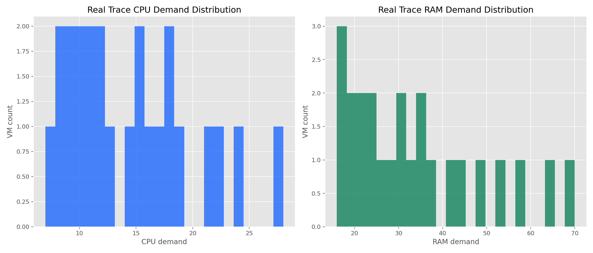
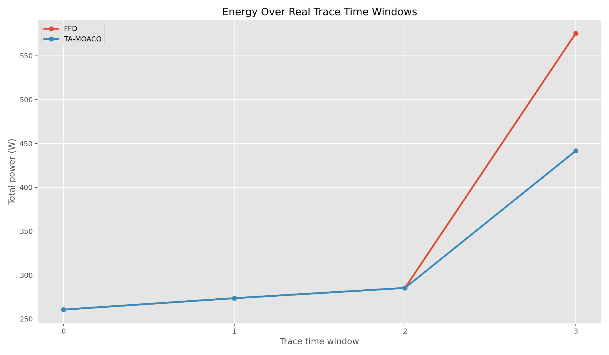
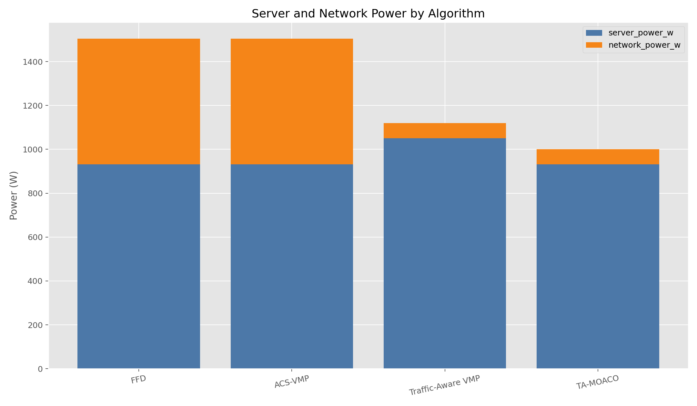
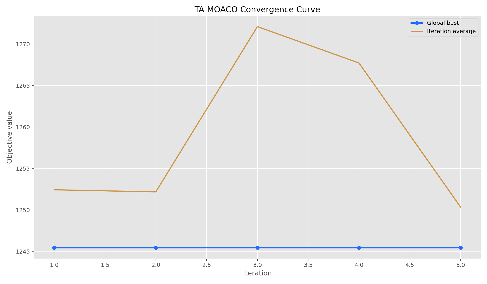
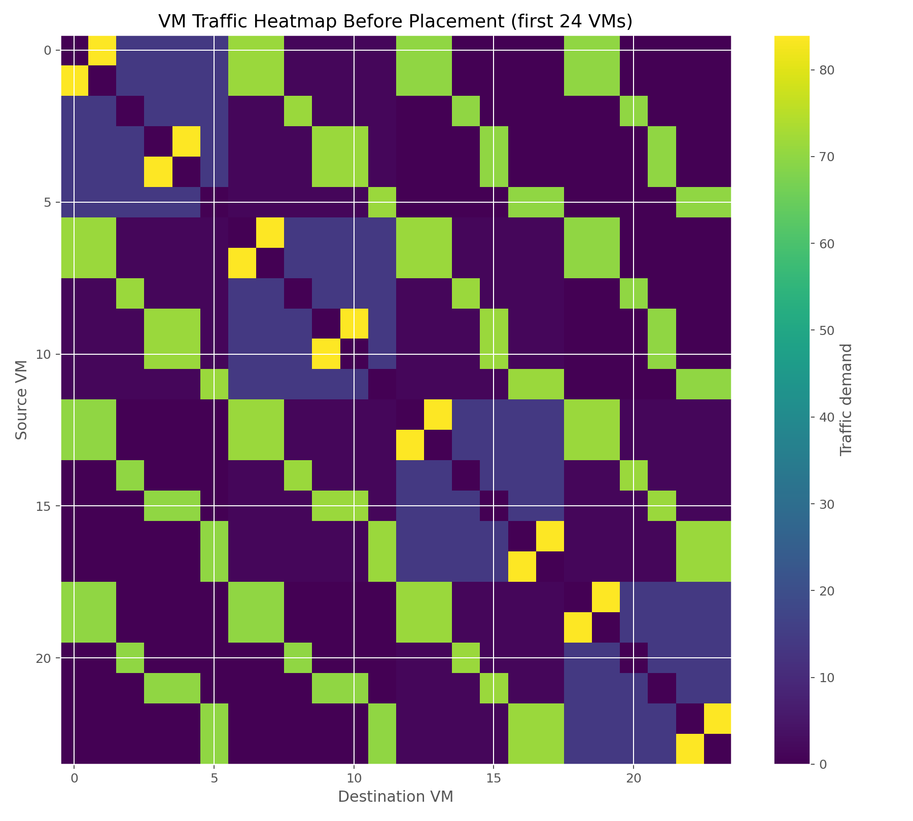
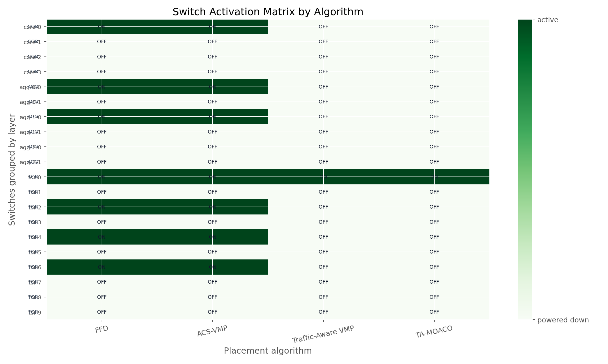
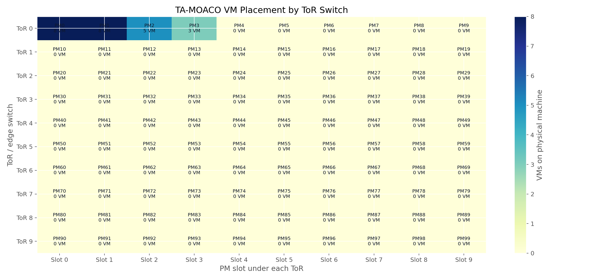

Run: run_1781474549_100pms_24vms_10ants_5iter
Scenario: medium
Recommended: TA-MOACO, total power 1000.10 W, savings 33.51%.
| algorithm | active_pms | active_switches | server_power_w | network_power_w | total_power_w | energy_savings_pct | average_hop_count | sla_violations |
|---|---|---|---|---|---|---|---|---|
| FFD | 4 | 7 | 931.1 | 573.0 | 1504.1 | 0.00 | 3.46 | 0 |
| ACS-VMP | 4 | 7 | 931.1 | 573.0 | 1504.1 | 0.00 | 3.33 | 0 |
| Traffic-Aware VMP | 5 | 1 | 1051.1 | 69.0 | 1120.1 | 25.53 | 1.35 | 0 |
| TA-MOACO | 4 | 1 | 931.1 | 69.0 | 1000.1 | 33.51 | 0.71 | 0 |
Source: Custom CSV
Traffic method: inferred from app_id/timestamp/network hints
VMs: 24 | Applications: 4 | Time windows: 4
CPU average/peak: 14.46 / 28.0 | RAM average/peak: 34.0 / 70.0






